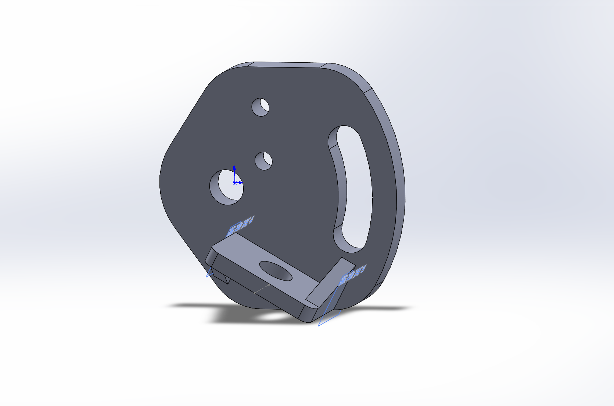
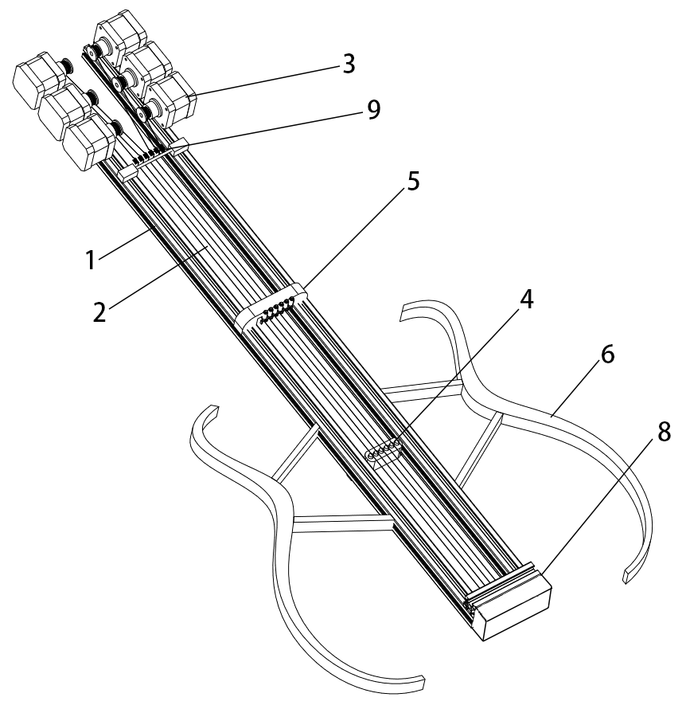
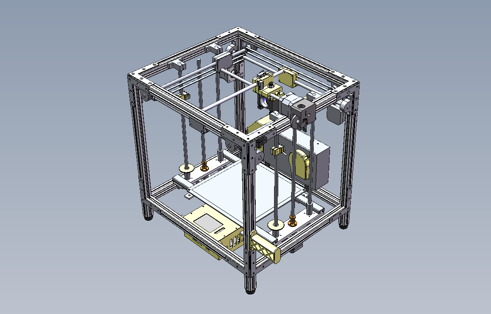

Making

First Impressions of the Bambu Lab X1C: A 3D-Printed Mechanical Bracket
I designed and printed a bracket, and used the chance to try the Bambu Lab X1 Carbon, a consumer-grade 3D printer.

A Plucked Instrument with Electronically Controlled Strings
A new kind of electronic string instrument that changes pitch by tightening the strings with stepper motors and fretting them with electromagnets; granted a utility model patent.

Building a UM-Style 3D Printer from Scratch
Following the open-source design of the Bilibili creator "大鱼DIY", I assembled a UM-style 3D printer myself, and here I record the bumps along the way.